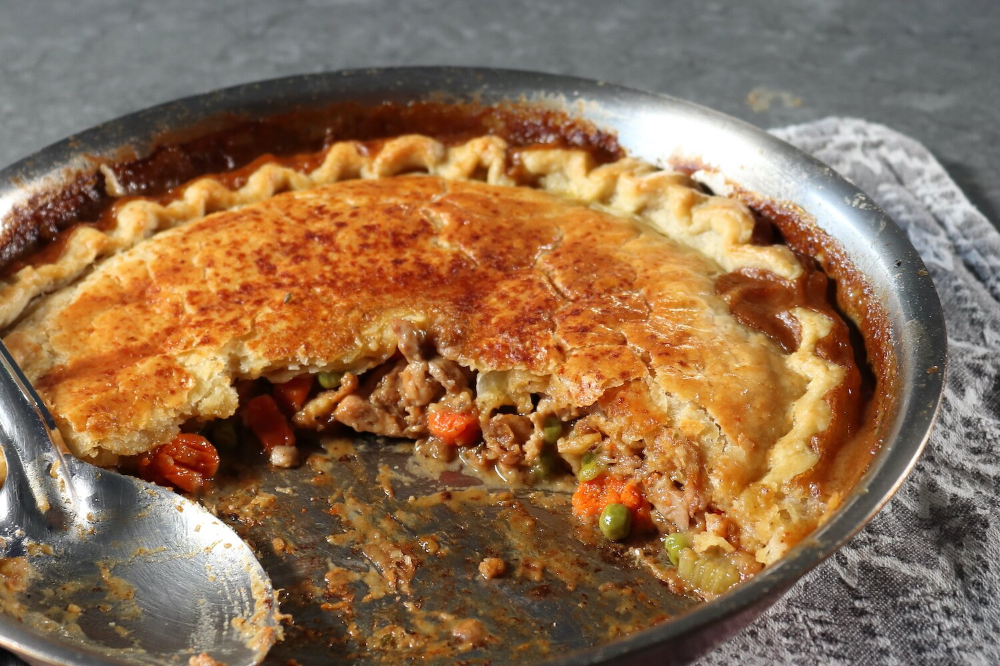

Pot Pie

Description
This delicious pie is guaranteed to blow the socks off of anyone who tries it! A must make for any gathering.
Add some chicken, add some beef, some carrots maybe! Really the world is your oyster. Maybe even through in OYSTERS while you're at it.
Ingredients
- ¼ cup unsalted butter
- ⅔ cup diced onion
- ½ teaspoon kosher salt, or to taste
- 1 ½ pounds boneless, skinless chicken thighs, cut into 1-inch pieces
- ¼ cup all-purpose flour
- 2 ½ cups chicken broth
- ½ cup sliced carrots
- ½ cup sliced celery
- ¼ teaspoon freshly ground black pepper
- 1 pinch cayenne pepper
- ½ cup frozen peas, thawed
- 1 teaspoon fresh thyme leaves
- 1 recipe pastry pie dough
- 1 large egg, beaten
- 2 teaspoons water
Steps
- Preheat the oven to 425 degrees F (220 degrees C).
- Melt butter in a 12-inch cast iron skillet over medium-high heat. Add diced onion and salt. Cook, stirring, until onions start to soften, and the edges begin to brown, 3 to 4 minutes. Add chicken, and cook, stirring, until the chicken loses its pink color, and starts to brown in spots, 3 to 4 minutes.
- Sprinkle flour over top, then cook and stir for about 2 minutes. Pour in the broth and bring to a simmer, scraping the bottom of the pan with a spatula. Stir in carrots, celery, black pepper, and cayenne.
- Cook the mixture, stirring occasionally, until it's as thick as you want, 5 to 10 minutes. For a thick, sticky filling once baked, reduce until the sauce coats the back of a spoon. For a saucier filling, don't reduce the mixture at all.
- Turn off the heat and stir in the peas and thyme. Taste for seasoning and reserve until needed.
- Roll out pie or pastry dough to form a circle about 14 inches in diameter.
- Fold over 1/2 inch of dough all the way around, and then crimp the edge to make a decorative scalloped design. Cut or punch out a 1-inch hole in the center of the dough.
- Place the pan on top of a sheet pan in case filling bubbles over in the oven. Carefully place the dough over the filling, and adjust until it's centered. Press the crust lightly into the filling. Brush the top with an egg wash if desired.
- Bake in the preheated oven until crust is browned and filling is bubbling, about 40 minutes. Let rest for 5 minutes before serving.